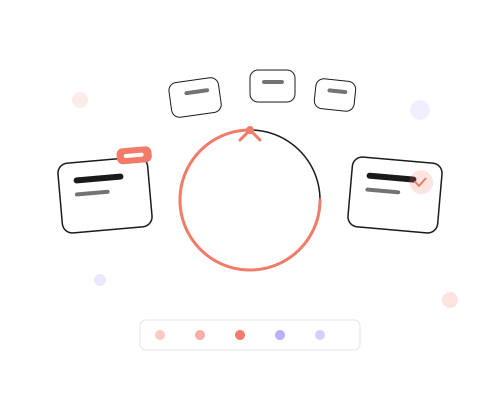

Thrift businesses buy bales, grade them into sellable lots, and resell. But without tracking, you don't know your real margins. Corelith connects every bale to its final sale so you know what's working.
When you can't trace a bale's cost through to its final sale, you're flying blind on your most important metric: profit.
Common thrift headaches:

Corelith Thrift connects bale intake, grading, and sales into one flow that shows your real margins.
Record every bale: supplier, cost, gross weight, net weight after grading. The foundation of your margin calculation.
Grade bales into sellable lots. Track lot composition, quantity, and cost per item.
Track what you have, where it came from, and how long it's been sitting. No more mystery stock.
Connect landed cost to resale price. See margin per lot, per item, per day.
Log every bale with supplier, cost, weight, and photo. Full traceability.
Record grading results. Track what came out of each bale. Cost allocation per lot.
Organize stock by lot. Track quantity, location, and age. Know what's selling and what's not.
Record every sale with lot source. Automatic stock reduction. Margin per transaction.
Set prices by lot, category, or item. Markdowns for aging stock.
Bale-level profitability. Lot-level margins. Daily sales analysis. What's working, what's not.
Bale photos. Grading photos. Shelf photos. Visual proof for every record.
Works in markets and shops with poor internet. Syncs when connected.
Shops and market stalls.
Bale traders and distributors.
Open-air and flea market sellers.
Import and distribution.
Log your first bale. Supplier, cost, weight, photo.
Grade it into lots. Track what you got and what it cost per item.
Sell from lots. Track every sale with lot source.
Know which bales, which lots, and which items make money.
Recommended: Starter Plan — $39/month. 1 location, 2 users, Retail Suite. Growth: $99/month for 3 locations, 10 users, Retail + Stores.
See Full Pricing →"We realized we were losing money on 30% of our bales. The margin report showed us exactly which suppliers and which grades were profitable. We changed our buying strategy and doubled our profit."
— Thrift Business Owner, Harare
Start free for 14 days. Log 3 bales. See your margins for the first time.
Start Free for 14 Days